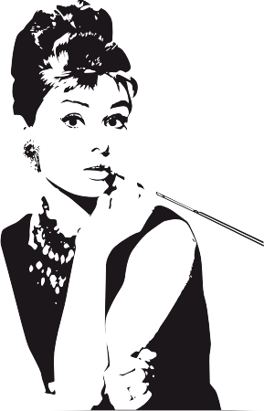

Содержание
- Биография 
Достижения 
- Контакты
Достижения
Премия «Оскар»
- 1954 — Лучшая актриса (за фильм «Римские каникулы»)
- 1993 — Гуманитарная премия имени Джина Хершолта
BAFTA
- 1954 — Лучшая актриса (за фильм «Римские каникулы»)
- 1960 — Лучшая актриса (за фильм «История монахини»)
- 1965 — Лучшая актриса (за фильм «Шарада»)
Золотой глобус
- 1954 — Лучшая женская роль (драма) (за фильм «Римские каникулы»)
- 1955 — Премия имени Генриетты
- 1990 — Премия Сесиля Б. Де Милля
Премия «Тони»
- 1954 — Лучшая актриса в пьесе (за постановку пьесы «Ундина»)
- 1968 — Специальная премия